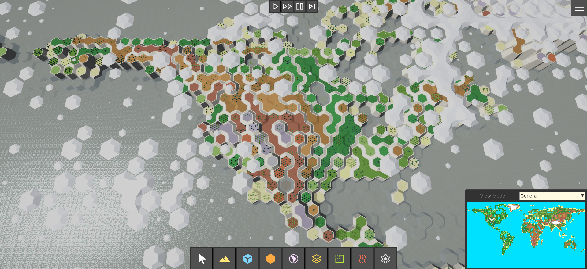

Hex Terrain Framework 2
Modular, High-Performance Hex-Based World System for Unity DOTS
Documentation

Description
Hex Terrains Framework 2 is a high-performance hex-based terrain and world simulation system built on Unity DOTS (Entities 1.0, Jobs, Burst). Designed for large-scale strategy, 4X, simulation, and sandbox games, it enables the creation of massive, interactive hex worlds with modular architecture, runtime editing, and efficient parallel processing. This is not just a terrain renderer — it is a scalable, layered world system built for long-term production use.
Each Terrain is represented as a single ECS Entity composed of modular Terrain Layers.
A Terrain Layer encapsulates its own structured Data Layers (per-cell maps) along with the logic responsible for rendering them.
A Data Layer stores a value for every terrain cell (such as float, int, Vector3, etc.), and these values can be visualized in different ways.
For example, values from the Height Map and Biome Map are rendered as a chunk mesh, where the cell height corresponds to the Height Map value and the cell texture corresponds to the Biome Map value.
Another example is the Cell Object Index Map, which stores an integer value for each cell. Each value corresponds to a 3D object from an object palette, which is then rendered on the respective terrain cell.
Terrain Layer Systems
Chunk Mesh Layers
(Ground, Water, Snow, Roads, Clouds, Rain, etc.)
- Procedurally generated mesh per chunk
- Fully independent surface layers
- Custom or built-in mesh generators
- Designed for layered environmental rendering
Cell Region Layers
(Countries, Provinces, Territories, etc.)
- Assigns a Region index per cell
- Caches cell indices per Region for fast queries
- Tracks total cell count per Region
- Automatically renders terrain using Region-based colors
Cell Minerals Layer
(Underground minerals, Dissolved in Air/Water, etc.)
- Assigns a Mineral Index and Minerals Amount per cell
- Calculates a color map based on Minerals Color Palette, Mineral Index and Minerals Amount
- Automatically renders terrain using Mineral-based colors
Cell Entity Layers
(Trees, Buildings, Units, Props, etc.)
- One ECS Entity per cell
- Fully compatible with ECS workflows
- Suitable for simulation-heavy gameplay systems
Cell Object Layers
(Trees, Buildings, Props, etc.)
- Lightweight static visual objects per cell
- Optimized alternative to ECS Entities
- Designed to support millions of objects per terrain
GeoPlast Layers
(Ground, Ocean, Snow, Atmosphere, Clouds, etc.) Volumetric environmental simulation per cell, supporting:
- Amount
- Density
- Volume
- Heat
- Temperature
Features:
- Layer stacking (Water above Ground, Air above Water, Clouds above Air, etc.)
- Horizontal material flow (Ocean currents, cloud movement, lava, pollution, etc.)
- Vertical flow between layers
- Clouds condense into Rain
- Water freezes into Snow
- Snow melts into Water
- Water evaporates into Clouds
This enables emergent environmental behavior driven by simulation rather than scripted effects.
Sun Layer
- A dynamic heat source that moves across the terrain.
- Configurable as a circular zone or directional line
- Heats nearby cells and cools distant ones
- Acts as the primary energy driver for climate simulation
The Sun Layer interacts with GeoPlast systems to produce natural weather cycles, freezing, melting, evaporation, precipitation, and heat-based material flow.
Core Features
Runtime Terrain Editing
- Modular extendable in-game terrain editor. Allows to edit all the data on the terrain
- Brush-based editing (size, opacity, stamping, sampling, auto-paint)
- Real-time feedback
- In-game UI Toolkit editor
Dynamic Terrain Creation
- Create terrains at runtime
- Custom dimensions, terrain settings, and resolution
- Regenerate or resize without restarting
Modular Terrain Layer Architecture
Create custom Terrain Layers composed of Data Maps such as height, biomes, regions, resources, entities, or custom gameplay values.
Each Data Layer:
- Is self-contained
- Uses per-chunk dirty flag tracking
- Supports job-safe dependency management
- Is architecturally separated from rendering
Highly Optimized Mesh Generation
- Burst-compiled jobs
- Chunk-based rebuild system
- Minimal allocations
- Extendable with custom generators
Minimap with Viewport Sync
- Real-time rendering of any data layer
- Click-to-center navigation
- Camera position indicator
Save / Load Support
- Modular binary serialization
- Saves full terrain state
- Includes all layers and runtime modifications
Wraparound Map Support
- Horizontal and vertical edge wrapping
- Seamless camera traversal
- Suitable for globe-style or Civilization-like maps
Performance by Default
- Designed with scalability as a core principle — you only pay performance cost for the features you actually use.
- Feature-driven architecture ensures no unnecessary systems run in the background
- Mesh regeneration is limited to modified and visible chunks only
- Parallelized calculations powered by Burst-compiled jobs
- Optimized for large-scale terrains
Performance tested in standalone builds on terrains up to 4096 × 2048 (8,388,608 cells), maintaining up to 90 FPS (hardware-dependent).
Technical Highlights
Unity Requirements
- Unity 6000.0.50f1 or newer
- Requires Entities (ECS 1.0) package
- Uses Burst and Jobs packages
- Compatible with URP and HDRP (core system is render pipeline agnostic)
Note: The optional Terrain Brush implementation uses DecalProjector and therefore depends on the active Render Pipeline. Everything else is Render Pipeline agnostic.
Architecture
- Terrain is implemented as a single ECS Entity
- Chunk-based spatial partitioning
- Terrain composed of modular Terrain Layers
- Each Terrain Layer encapsulates structured Data Layers (per-cell maps)
- Per-chunk dirty flag tracking for selective rebuilds
- Job-safe read/write dependency management
Rendering
- Hybrid rendering approach
- Uses Graphics.DrawMeshInstanced for mesh layers
- Optional ECS-based Cell Entity rendering
- Custom mesh generator interface for extensibility
- Layered surface rendering (ground, water, snow, etc.)
Simulation Systems
- Volumetric GeoPlast material system
- Horizontal and vertical material flow
- Heat-based interaction model
- Sun-driven environmental simulation
Performance Characteristics
- Burst-accelerated hex math (axial and offset coordinates)
- Parallel chunk mesh generation
- Selective regeneration of modified visible chunks
- Designed for large-scale terrains (tested up to 4096 × 2048 cells in standalone builds)
Extensibility
- Custom Terrain Layers supported
- Custom Data Layers supported
- Custom mesh generators supported
- Suitable for integration with gameplay ECS systems
- Designed for multi-terrain projects
Serialization
- Modular binary serialization
- Full terrain state save/load
- Supports runtime modifications
Ideal For
- 4X and Strategy Games
- Simulation and Economy Games
- City Builders
- Custom World Editors
- ECS Learning Projects
- Games that require fully interactive hex terrain with high performance
Included
- Full source code (C# + DOTS)
- Demo project with HDRP and URP samples
- In-game terrain editor with sample tools
- Procedural brushes and auto-painting systems
- Modular, extendable UI framework